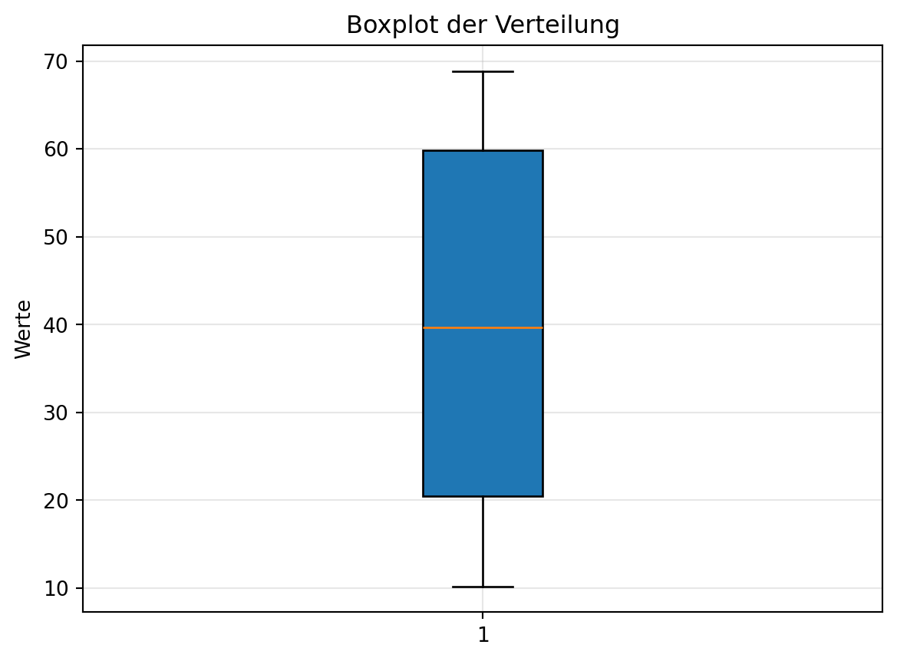

1. Berechnung von Mittelwert, Varianz und Kovarianz
Aufgabe:
Gegeben ist folgende Tabelle mit Werten für zwei Variablen \(X\) und \(Y\):
\(X\)
\(Y\)
2
3
4
7
6
5
8
9
10
11
Berechne den Mittelwert von \(X\), den Mittelwert von \(Y\), die Varianz von \(X\), die Varianz von \(Y\) und die Kovarianz zwischen \(X\) und \(Y\). Interpretiere anschließend die Kovarianz hinsichtlich der Beziehung zwischen \(X\) und \(Y\).
Interpretation der Kovarianz:
Die Kovarianz ((X, Y) = 7.2) ist positiv. Das bedeutet, dass \(X\) und \(Y\) positiv korreliert sind. Wenn die Werte von \(X\) steigen, tendieren auch die Werte von \(Y\) dazu, zu steigen, und umgekehrt. Eine positive Kovarianz zeigt somit eine gemeinsame Bewegungsrichtung der beiden Variablen an.
2. Beschreibung von Skalenniveaus von Variablen
Aufgabe:
Bestimme das Skalenniveau (nominal, ordinal, metrisch) der folgenden Variablen:
a) Geschlecht (männlich, weiblich, divers)
b) Schulnoten (1, 2, 3, 4, 5, 6)
c) Temperatur in Celsius
d) Lieblingsfarbe (rot, blau, grün, etc.)
e) Körpergröße in cm
Musterlösung
Musterlösung
Geschlecht: Nominal (Kategorien ohne Reihenfolge)
Schulnoten: Ordinal (Kategorien mit Reihenfolge, aber ungleiche Abstände)
Temperatur in Celsius: Metrisch (kontinuierliche Werte mit gleichen Abständen, aber kein absoluter Nullpunkt)
Lieblingsfarbe: Nominal (Kategorien ohne Reihenfolge)
Körpergröße in cm: Metrisch (kontinuierliche Werte mit wahrem Nullpunkt)
3. Berechnung von Wahrscheinlichkeiten mit Additions- und Multiplikationsregeln
Aufgabe:
In einem Kartenspiel mit 52 Karten (4 Farben, 13 Werte) ziehst du zwei Karten nacheinander ohne Zurücklegen. Berechne:
a) Die Wahrscheinlichkeit, dass die erste Karte ein Ass ist.
b) Die Wahrscheinlichkeit, dass die zweite Karte ein Ass ist, wenn die erste Karte ein Ass war.
c) Die Wahrscheinlichkeit, dass beide Karten Asse sind.
Musterlösung
Musterlösung
Erste Karte ein Ass: \[
P(\text{Ass}_1) = \frac{4}{52} = \frac{1}{13} \approx 0.0769
\]
Zweite Karte ein Ass, wenn erste Karte ein Ass war:
Nach dem Ziehen eines Asses bleiben 3 Asse und 51 Karten: \[
P(\text{Ass}_2 \mid \text{Ass}_1) = \frac{3}{51} = \frac{1}{17} \approx 0.0588
\]
Aufgabe:
In einer Firma sind 60 % der Angestellten männlich. 30 % der männlichen Angestellten und 40 % der weiblichen Angestellten haben einen Hochschulabschluss. Berechne die Wahrscheinlichkeit, dass ein zufällig ausgewählter Angestellter mit Hochschulabschluss männlich ist.
Gesucht: \(P(M \mid H)\). Nach dem Satz von Bayes: \[
P(M \mid H) = \frac{P(H \mid M) \cdot P(M)}{P(H)}
\] Zuerst \(P(H)\): \[
P(H) = P(H \mid M) \cdot P(M) + P(H \mid W) \cdot P(W) = 0.3 \cdot 0.6 + 0.4 \cdot 0.4 = 0.18 + 0.16 = 0.34
\] Dann: \[
P(M \mid H) = \frac{0.3 \cdot 0.6}{0.34} = \frac{0.18}{0.34} \approx 0.5294
\] Also etwa 52.94 %.
5. Umrechnen von Werten einer Normalverteilung zur Standardnormalverteilung
Aufgabe:
Eine Zufallsvariable \(X\) ist normalverteilt mit \(\mu = 50\) und \(\sigma = 10\). Berechne die Wahrscheinlichkeit, dass \(X < 60\), indem du den Wert in die Standardnormalverteilung umrechnest und aus einer Standardnormalverteilungstabelle abliest.
Musterlösung
Musterlösung
Standardisiere \(X = 60\): \[
Z = \frac{X - \mu}{\sigma} = \frac{60 - 50}{10} = 1
\] In der Tabelle für \(Z = 1.00\) findest du \(\Phi(1.00) = 0.8413\).
Also: \[
P(X < 60) = P(Z < 1) = 0.8413
\]
6. Ablesen von Quantilen aus einem Boxplot
Aufgabe:
Erstelle mit Python einen Boxplot für eine Verteilung mit folgenden Eigenschaften: Die Box erstreckt sich von 20 bis 60, der Median liegt bei 40, und die Whisker reichen von 10 bis 70. Sieh dir den Boxplot in Figure 1 an und bestimme das 25 %-Quantil, das 50 %-Quantil (Median) und das 75 %-Quantil.
import numpy as npimport matplotlib.pyplot as plt# Daten generieren, die den Anforderungen entsprechennp.random.seed(42)data = np.concatenate([ np.random.uniform(10, 20, 25), # Unterer Whisker bis Q1 np.random.uniform(20, 40, 25), # Q1 bis Median np.random.uniform(40, 60, 25), # Median bis Q3 np.random.uniform(60, 70, 25) # Q3 bis oberer Whisker])plt.boxplot(data, vert=True, patch_artist=True, showmeans=False)plt.title('Boxplot der Verteilung')plt.ylabel('Werte')plt.grid(alpha=0.3)plt.show()

Figure 1: Boxplot zur Verteilung mit spezifizierten Quantilen.
Musterlösung
Musterlösung
25 %-Quantil (untere Quartil): Beginn der Box bei 20